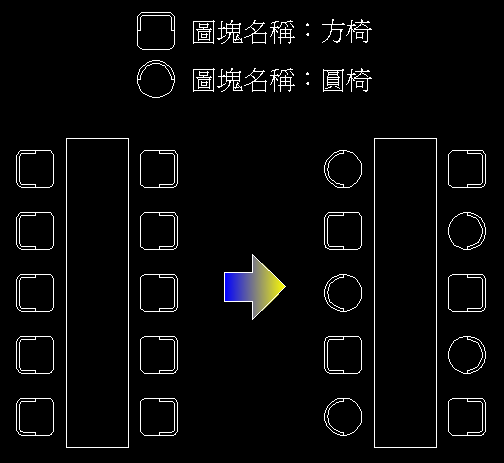

問題：置換圖塊範例.dwg 總共有10張圖塊名稱為「方椅」圖塊，現在有部分的「方椅」圖塊需要修改成為圖塊名稱為「圓椅」的圖塊。請問您會使用何種方式，將椅子圖塊型式更換掉，需要保持原來的圖塊狀態，而且圖塊插入點位置需要一致，不可以使用分解指令。

說明：圖左為範例問題，圖右為需完成的結果
註：秘訣為使用「剪貼簿」功能方式。
2012-11-23解答：
我想借此範例讓彼此能了解到不同的作法，如此一才就可以有效提昇繪圖效率！
再來提供我的作法以及補充2012版本的另一種方式，有問題請在提出來吧！
補充：以下文章有討論到其他作法，還有提供LISP的操作，大家可以看看相關討論～
DWG範例檔下載(2000格式):